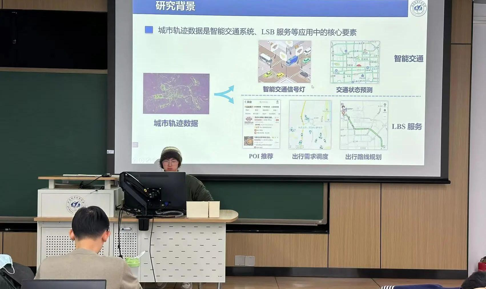
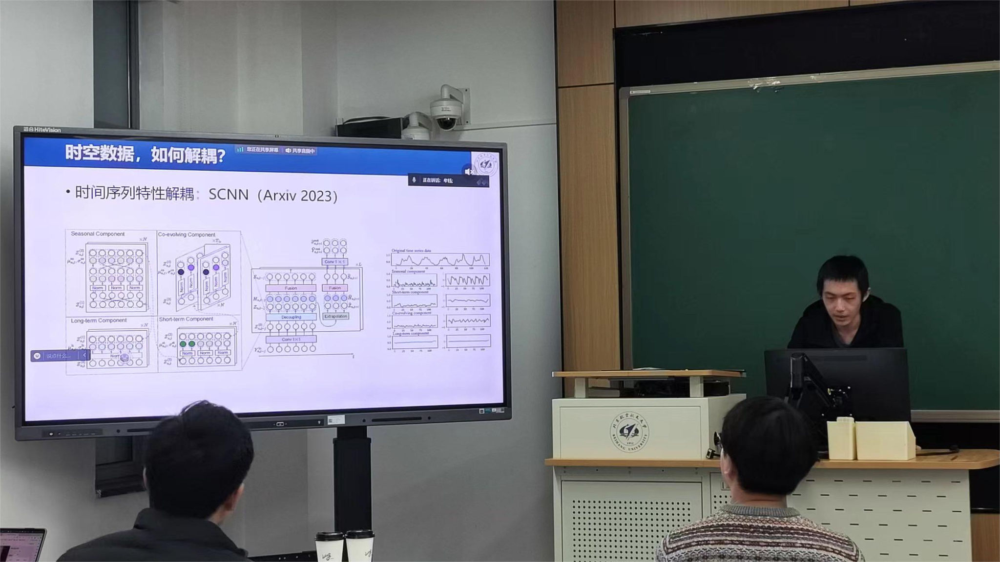
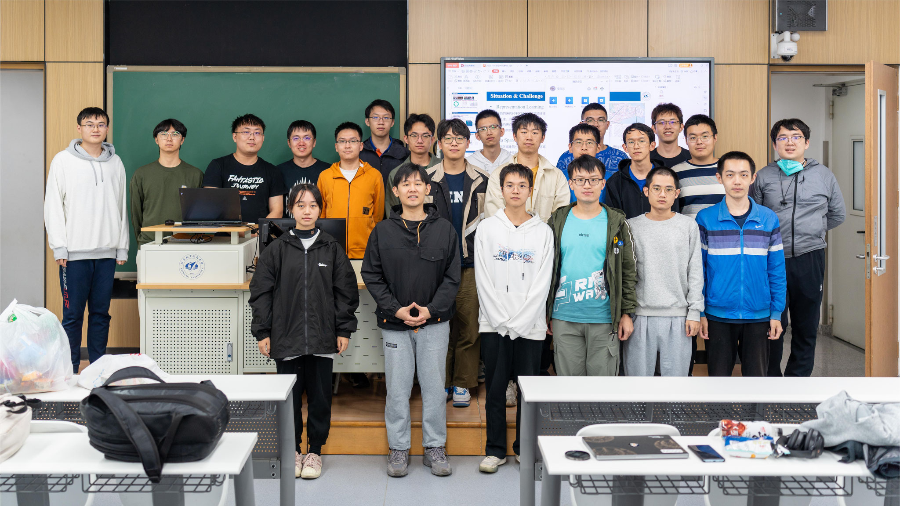

Current Visitors:
Review of Seminars in 2023
The 11th BIGSCITY Seminar (2023.12.22)
The 11th BIGSCITY Seminar was held both online and offline on December 22, 2023. During the seminar, three students gave presentations: one student provided an interpretation of a TKDE 2023 paper on heterogeneous graph neural networks, while the other two students shared summaries based on their own research in the fields of urban trajectory generation, spatiotemporal data, and foundational models. The event was successfully concluded. read more
Presenters:
Peiyu Wang: Hierarchical Contrastive Learning Enhanced Heterogeneous Graph Neural Networks [slides]
Wenjun Jiang: Research Status and Development Trends of Urban Trajectory Generation [slides]
Jingtian Ma: Advancements of Spatiotemporal Data and Foundational Models [slides]
-

-

The 10th BIGSCITY Seminar (2023.11.29)
The 10th BIGSCITY seminar was held both online and offline on November 29, 2023. The seminar featured a rich variety of topics: one student systematically introduced the concept of decoupling of time and space learning and related work, and provided an outlook on the future development of this field; two students each selected a paper from KDD'23 and presented their interpretations and insights, covering topics such as cellular traffic data generation and spatiotemporal point process diffusion; another student shared their experience in maintaining the open-source urban spatiotemporal prediction algorithm library, LibCity, and provided insights on how to maintain open-source projects. read more
Presenters:
Yu Mou: Decoupling of time and space: learning from existing research and prospects [slides]
Yudong Li: Generation of cellular traffic data based on deep transfer learning [slides]
Zengyu Zou: Application of diffusion models in spatiotemporal data [slides]
Jiawei Jiang: GitHub repository project maintenance [slides]
-

-

-

The 9th BIGSCITY Seminar (2023.10.13)
The ninth BIGSCITY seminar was successfully held online and offline on October 13, 2023. The main content of this seminar is the introduction and discussion of papers. A total of three students will interpret and share the selected papers, and communicate with other participants on the content of the papers. The selected papers at this meeting are from KDD'23 and Arxiv, covering multiple directions such as regional representation learning, multivariate time series prediction, model fairness, and uncertainty research. read more
Presenters:
Jiawei Cheng: Using OpenStreetMap building footprint for urban area representation learning [slides]
Jiahao Ji: Research on fairness issues in multivariate time series prediction [slides]
Zehua Liu: The Application of Uncertainty in Traffic Prediction [slides]
-

-

The 8th BIGSCITY Seminar (2023.9.7)
The theme of this month's seminar is the interpretation of this year's KDD spatiotemporal related papers. Four students will choose their own research direction to interpret and discuss the relevant papers in the KDD conference. The content of the report covers transferable graph structure learning, spatiotemporal knowledge graph joint relationship evolution learning, localized adaptive spatiotemporal graph neural network, VAE based human trajectory synthesis, etc. read more
Presenters:
Dayan Pan: TransGTR [slides]
Zimeng Li: Co-evolutionary learning of spatiotemporal knowledge graph for small and medium-sized enterprise supply chain forecasting [slides]
Chengkai Han: Localized adaptive spatiotemporal graph neural network [slides]
Yujing Lin: Human trajectory synthesis based on VAE [slides]
The 7th BIGSCITY Seminar (2023.7.28)
The theme of this month's seminar is the interpretation of spatiotemporal papers related to KDD in recent years. Four students will choose relevant papers from the KDD conference for interpretation and discussion based on their research direction. The content of the report covers spatiotemporal prediction based on multi-step dependency, multivariate time series modeling and prediction, dynamic graph feature learning, graph neural networks and spatiotemporal prediction, etc. read more
Presenters:
Lida Guo: Spatiotemporal prediction based on multi-step dependency relationships [slides]
Qiushi Feng: Time series interpolation method based on location-aware graph and variational encoder [slides]
Wentao Zhang: Spatiotemporal dynamic graph representation learning [slides]
Zhibo Zhang: STEP: Enhanced multivariate time series prediction with pre-trained models and spatiotemporal graph neural networks [slides]
The 6th BIGSCITY Seminar (2023.6.16)
On June 16th, BIGSCITY Lab successfully held a special session on spatiotemporal data mining at the KDD Workshop. Five students who were accepted for KDD 2023 presented their research topics and engaged in discussions with the attendees. The presentations covered various topics including time series data prediction, scholar influence profiling, node popularity prediction, spatiotemporal causal learning, and spatiotemporal point processes. read more
Presenters:
Chen Yang: Time series heterogeneity analysis with wavelet/dynamic time warping and attention mechanism [slides]
Yuankai Luo: Scholar influence profiling based on self-citation graph [slides]
Shuo Ji: Node popularity prediction based on community structure and dynamic graph representation learning [slides]
Zhengyang Zhou: Invariant correlation learning for spatiotemporal data distribution outliers [slides]
Yuan Yuan: Spatiotemporal diffusion point process [slides]
The 5th BIGSCITY Seminar (2023.5.17)
In this spatiotemporal data mining paper seminar, five students admitted to KDD2023 will discuss their research directions with everyone. The content of the report covers time series data prediction, scholar influence profiling, node popularity prediction, spatiotemporal causal learning, spatiotemporal point processes, etc. read more
Presenters:
Yichuan Zhang: Traditional machine learning methods and VC theory in high-dimensional data
Honghao Shi: Methods and comparisons for distributed training models
Xiaohan Jiang: Self-supervised learning for time series
Chen Yang: Deep learning in finance
The 4th BIGSCITY Seminar (2023.4.5)
On April 5th, the BIGSCITY Lab conducted its fourth spatiotemporal data mining workshop, where four students engaged in discussions regarding their respective research topics. The presentations covered spatiotemporal data mining, transfer learning, causal inference, representation learning, and trajectory quality enhancement. read more
Presenters:
Yujing Lin: Interdisciplinary research on operations research and transportation science [slides]
Wentao Zhang: Causal and spatiotemporal data mining [slides]
Yifan Yang: Urban area representation learning [slides]
Yudong Li: Survey on trajectory quality enhancement techniques [slides]
The 3rd BIGSCITY Seminar (2023.3.5)
On March 5th, BIGSCITY Lab hosted its third spatiotemporal data mining paper workshop, with four students discussing their research topics with the audience. The presentations encompassed spatiotemporal data mining, AI in healthcare, infectious disease modeling, traffic forecasting, and federated learning. read more
Presenters:
Chengkai Han: Application of federated learning in spatiotemporal domain [slides]
Honghao Shi: Spatiotemporal data and AI in infectious disease research [slides]
Dayan Pan: Data patterns in electronic health records [slides]
Yu Mou: Enhanced traffic prediction using graph decomposition [slides]
The 2nd BIGSCITY Seminar (2023.1)
Presenters:
Jiawei Cheng: Attack on spatiotemporal prediction models based on saliency values
Qiushi Feng: Time series prediction modeling and self-supervised learning
Xiaohan Jiang: Time-frequency analysis and applications in time series
Peiyu Wang: Epidemic prediction model integrating multiple data sources